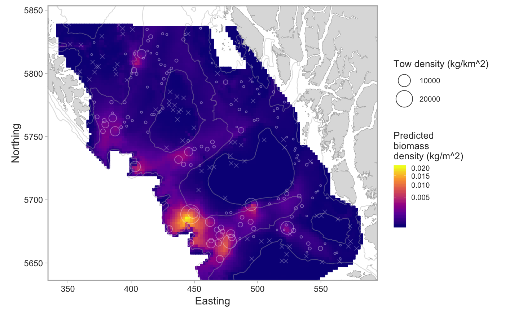
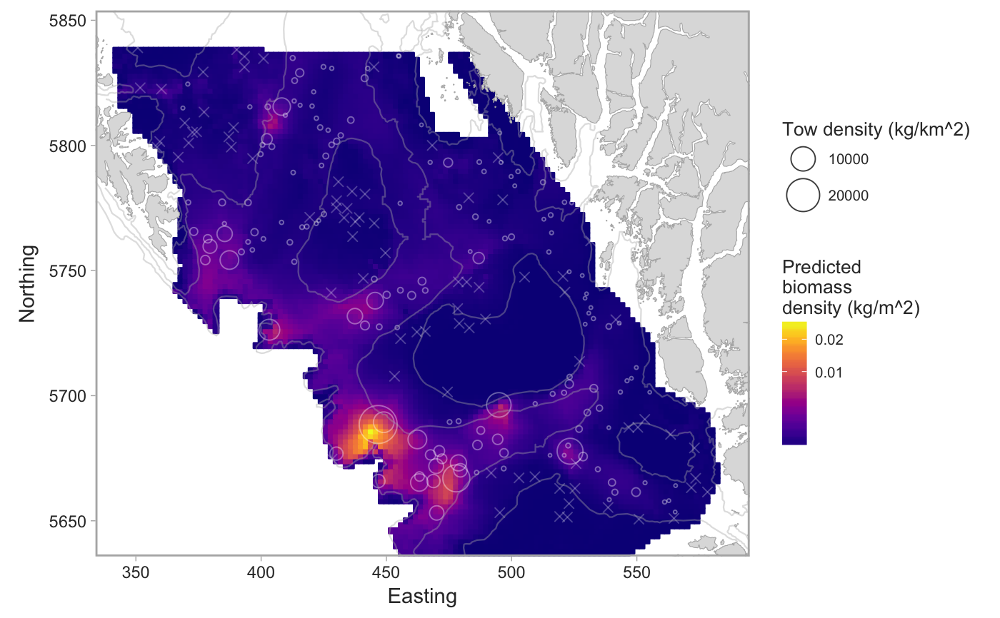
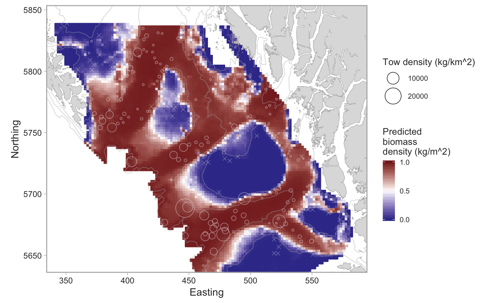

R/surveys-spatial.R
plot_survey_sets.RdTakes the output from fit_survey_sets() and creates a map of the model
predictions and/or the raw data. Includes a number of options for customizing
the map including the ability to rotate the map.
plot_survey_sets(pred_dat, raw_dat, fill_column = c("combined", "bin", "pos"), fill_scale = ggplot2::scale_fill_viridis_c(trans = "sqrt", option = "C"), colour_scale = ggplot2::scale_colour_viridis_c(trans = "sqrt", option = "C"), pos_pt_col = "#FFFFFF60", bin_pt_col = "#FFFFFF40", pos_pt_fill = "#FFFFFF05", pt_size_range = c(0.5, 9), show_legend = TRUE, extrapolate_depth = TRUE, extrapolation_buffer = 0, show_model_predictions = TRUE, show_raw_data = TRUE, utm_zone = 9, fill_label = "Predicted\nbiomass\ndensity (kg/m^2)", pt_label = "Tow density (kg/km^2)", rotation_angle = 0, rotation_center = c(500, 5700), show_axes = TRUE, xlim = NULL, ylim = NULL, x_buffer = c(-5, 5), y_buffer = c(-5, 5), north_symbol = FALSE, north_symbol_coord = c(130, 5975), north_symbol_length = 30, cell_size = 2, circles = FALSE)
| pred_dat | The |
|---|---|
| raw_dat | The |
| fill_column | The name of the column to plot. Options are |
| fill_scale | A ggplot |
| colour_scale | A ggplot |
| pos_pt_col | The color for positive set location points. |
| bin_pt_col | The color for binary set location points. |
| pos_pt_fill | The fill color for positive set location points. |
| pt_size_range | The range of point sizes for positive set location points. |
| show_legend | Logical for whether or not to show the legend. |
| extrapolate_depth | Logical for whether or not to show predictions across all depths in the survey domain (the default) or to not extrapolate beyond the range of the observed sets in the data set. |
| extrapolation_buffer | A buffer to add to the minimum and maximum
observed depths if |
| show_model_predictions | Logical for whether or not to show the geostatistical model predictions. |
| show_raw_data | Logical for whether or not to show the raw data. |
| utm_zone | The UTM zone to plot in. Should match the zone used in
|
| fill_label | A label to use in the legend for the fill color. |
| pt_label | A label to use in the legend for the point size. |
| rotation_angle | An angle to rotate the entire map. Can be useful to
make a map of the BC coast take up less. Defaults to not rotating the map.
The groundfish synopsis report uses |
| rotation_center | The coordinates around which to rotate the mouth. These should be in UTM coordinates. |
| show_axes | Logical for whether or not to show the axes. |
| xlim | X axis limits in UTM coordinates. The synopsis report uses
|
| ylim | Y axis limits in UTM coordinates. The synopsis report uses
|
| x_buffer | A buffer in UTM coordinates to extend the X axis. Mostly useful if the axis limits aren't explicitly specified. |
| y_buffer | A buffer in UTM coordinates to extend the Y axis. Mostly useful if the axis limits aren't explicitly specified. |
| north_symbol | Logical for whether to include a north symbol. |
| north_symbol_coord | Coordinates for the north symbol in UTM coordinates. |
| north_symbol_length | Length of the north assemble arrow. |
| cell_size | The size of the grid cells for the model predictions. |
| circles | Logical for whether to plot the model predictions in circles. This analysis report uses this for the IPHC survey. |
A ggplot object.
set.seed(123) # pop_surv <- get_survey_sets("pacific ocean perch") # or use built-in data: fit <- fit_survey_sets(pop_surv, years = 2015, survey = "SYN QCS")#>#>#>#># The combined model: plot_survey_sets(fit$predictions, fit$data, fill_column = "combined")# The positive component model: plot_survey_sets(fit$predictions, fit$data, fill_column = "pos")# Add a custom color scale for the binary model: plot_survey_sets(fit$predictions, fit$data, fill_column = "bin") + ggplot2::scale_fill_gradient2(midpoint = 0.5, high = scales::muted("red"), mid = "white", low = scales::muted("blue"), limits = c(0, 1), breaks = c(0, 0.5, 1)) + ggplot2::scale_colour_gradient2(midpoint = 0.5, high = scales::muted("red"), mid = "white", low = scales::muted("blue"), limits = c(0, 1))#> #>#> #>